Hello,
I'm trying to configure LazyBone WIFI switch (http://www.tinyosshop.com/index.php?route=product/product&product_id=496) in OpenRemote
I successful send on/off commands but unable to get status of the switch
Following the manual I need to send '[' command
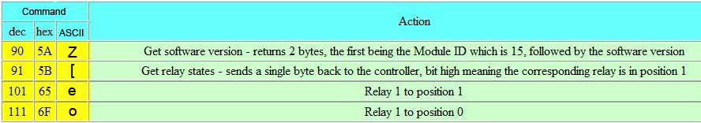
I'm using telnet protocol to send all commands, but system send back a hex value and I don't know how to take it
I tried connect to switch by regular telnet and write output to file
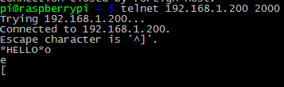
this is what I received
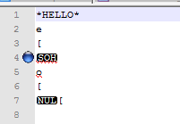
Maybe some bode have idea how to get this value?
This is log from my OpenRemote
DEBUG 2014-03-08 16:36:36,636 (Telnet): Telnet Command: port= 2000
DEBUG 2014-03-08 16:36:36,639 (Telnet): Telnet Command: command = null|[
DEBUG 2014-03-08 16:36:36,642 (Telnet): Telnet Command: ipAddress = 192.168.1.200
DEBUG 2014-03-08 16:36:36,646 (Telnet): Telnet Command created successfully
DEBUG 2014-03-08 16:36:36,661 (Telnet): Initializing sensor for telnet protocol: Sensor (Name = 'sensor-wifi-status', ID = '104', State Mappings: {null=OFF, *=ON})
DEBUG 2014-03-08 16:36:36,686 (Telnet): Sensor thread started for sensor: Sensor (Name = 'sensor-wifi-status', ID = '104', State Mappings:{null=OFF, *=ON})
DEBUG 2014-03-08 16:36:36,689 (Telnet): Executing status command for sensor: Sensor (Name = 'sensor-wifi-status', ID = '104', State Mappings: {null=OFF, *=ON})
INFO 2014-03-08 16:36:36,736 (Telnet): send: [
INFO 2014-03-08 16:36:37,750 (Telnet): received: *HELLO*
DEBUG 2014-03-08 16:36:37,767 (Telnet): Telnet status command received value: *HELLO*
{kind=link}
{kind=link}
{kind=link}
{kind=link}
{kind=link}
{kind=link}
{kind=link}
{kind=link}
{kind=link}
{kind=link}
{kind=link}
{kind=link}
{kind=link}
{kind=link}
{kind=link}
{kind=link}
{kind=link}
{kind=link}
|
Hi Guys |
|
I am using a tosr0x 2-relay module from tinyosshop to control a window shade and I am now in the process of using a LazyBone to implement a thermostat. I am running OR controller on a rPi which communicates with the relay modules through WIFI. I faced the same problem that you describe. I have been able to control the relay states to ON/OFF through TCP/IP protocol but I have not been able to read the status of the relays. I have tryed telnet and TCP/IP protocols. I have also tryed different versions of the OR controller. In theory when you connect to the relay module and you send the '[' command you should get an answer that is '*HELLO*' followed with a character, that in the case of a LazyBone (module with only 1 relay), should be either 0x01 or 0x02. In theory it should be possible to receive and filter this response through a custom sensor and a regex. But I didn´t succeed. Without filtering the response I was able to see the relay module's prompt on OR mobile application, but only sometimes. Most of the times I would get a 'NA' The solution that I have implemented is to use shell execution protocol instead of TCP/IP. Then I execute a Python script that sends the '[' command to the relay module and converts the 0x00 or 0x01 response into the desired format to feed a sensor. This is the command: 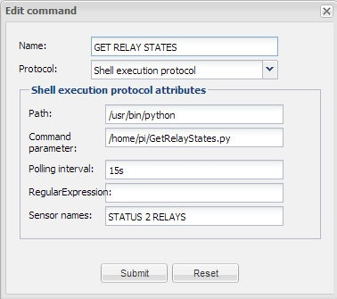 This is the simple python script: 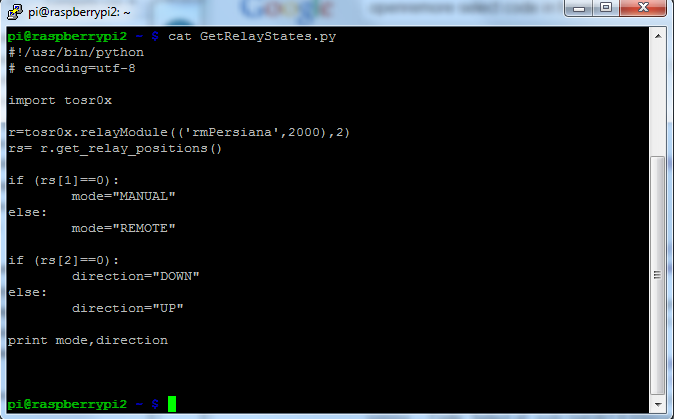 And this is the library that I am using https://github.com/alexroche/tosr0x.git |
|
Dear Alex, Thank you very much for excelent explanation of solution Thank you again and Best regards, |
|
Hello, After few days of playing with the system I want to write some tips that can help to everybody who want to configure Lazybone Wi-Fi switch. This is steps what you need to perform for configure script and successfully receive switch status 3. Create script GetRelaySates.py and place it to folder "/scripts/"
#!/usr/bin/python
# encoding=utf-8
import tosr0x
r=tosr0x.relayModule(('192.168.1.1',2000),2)
rs=r.get_relay_positions()
if (rs[1]==0):
mode="off"
else:
mode="on"
if (rs[2]==0):
direction="DOWN"
else:
direction="UP"
print mode
4.Change script user owner sudo chown pi:root /scripts/GetRelaySates.py 5.Run this script to test if everything is OK. 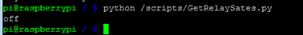 Now we ready to create switch in OpenRemote designer 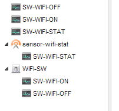 a.Create SW-WIFI-OFF 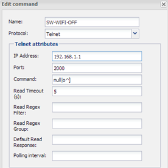 b.Create SW-WIFI-ON 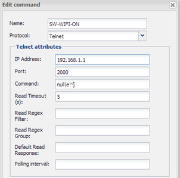 c.Create SW-WIFI-STAT 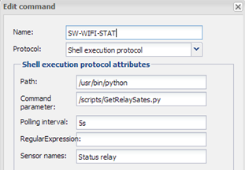 d.Create new sensor - sensor-wifi-stat 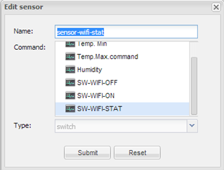 e.Create new switch- WIFI-SW 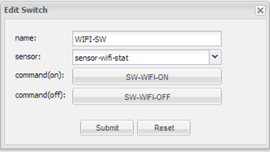 If all steps was created successfully , you can start create switch on panel |
|
Hi guys I've been looking for a wifi switch and the lazybone one looks quite interesting - couple of questions for you - I have a spare pi which could be used for the script but my live OR environment is Windows XP. Could I either call the script on the pi from XP or would it be easy to get the script to run under XP? Jules |
|
Hi Jules I am using this switch in my house, and it working good with range 3-5 meter from the router About python script- you can run python script on Windows XP, but not sure if you can install tos0rx library on Windows. |
|
this is how I made it work in OR: 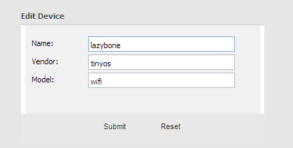 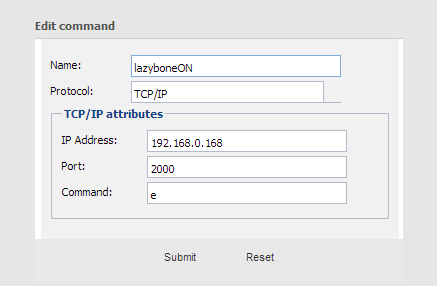 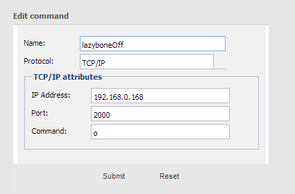 |